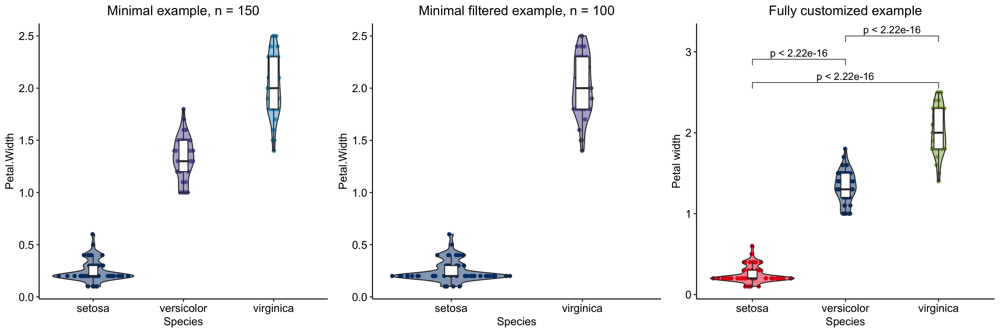

The goal of ggAU is to simplify the process of creating publication-ready visualizations that follow the Aarhus University color scheme. It also includes a color scheme inspired by the TRACERx publications.
Installation
You can install the development version of ggAU from GitHub with:
# install.packages("devtools")
devtools::install_github("juditkisistok/ggAU")Available color palettes
library(ggAU)
unikn::seecol(au_color_palette(style = "light"), main = "Light",
grid = F, rgb = F)
unikn::seecol(au_color_palette(style = "dark"), main = "Dark",
grid = F, rgb = F)
unikn::seecol(au_color_palette(style = "hotandcold"), main = "Hot and cold",
grid = F, rgb = F)
unikn::seecol(au_color_palette(style = "hotandcold_dark"), main = "Hot and cold (dark)",
grid = F, rgb = F)
unikn::seecol(au_color_palette(style = "tracerx"), main = "TRACERx",
grid = F, rgb = F)Examples
The scale_fill_au and scale_color_au functions allow you to apply the pre-defined color palettes.
The default color scheme is light and the default variable type is continuous. You can add discrete = T for categorical variable color schemes.
iris_df = dplyr::summarize(dplyr::group_by(iris, Species),
`Mean petal width` = mean(Petal.Width))
light_plot_fill = ggplot2::ggplot(iris_df, ggplot2::aes(x = Species,
y = `Mean petal width`, fill = Species)) +
ggplot2::geom_bar(stat = "identity") +
ggpubr::theme_pubr() +
scale_fill_au(discrete = T)
dark_plot_fill = ggplot2::ggplot(iris_df, ggplot2::aes(x = Species,
y = `Mean petal width`, fill = Species)) +
ggplot2::geom_bar(stat = "identity") +
ggpubr::theme_pubr() +
scale_fill_au(discrete = T, style = "dark")
cowplot::plot_grid(light_plot_fill, dark_plot_fill)
It is also possible to define your own mix of colors - you can retrieve a vector of AU hex codes by color name.
my_custom_style = c("blue", "yellow", "red")
ggplot2::ggplot(iris_df, ggplot2::aes(x = Species,
y = `Mean petal width`, fill = Species)) +
ggplot2::geom_bar(stat = "identity") +
ggpubr::theme_pubr() +
scale_fill_au(discrete = T, style = "custom", colors = my_custom_style)
The continuous fill scale works in a similar way, both with the built-in and custom color schemes.
dummy_data = expand.grid(x = paste0("var_", seq(1, 10)),
y = paste0("var_", seq(11, 20)))
dummy_data$z = runif(100, -1, 1)
cont_fill_1 = ggplot2::ggplot(dummy_data, ggplot2::aes(x, y, fill = z)) +
ggplot2::geom_tile() +
ggpubr::theme_pubr() +
scale_fill_au(style = "hotandcold")
cont_fill_2 = ggplot2::ggplot(dummy_data, ggplot2::aes(x, y, fill= z)) +
ggplot2::geom_tile() +
ggpubr::theme_pubr() +
scale_fill_au(style = "custom", colors = c("yellow", "white", "darkblue"))
cowplot::plot_grid(cont_fill_1, cont_fill_2)
The color aesthetic can be changed in a similar way, using scale_color_au.
discrete_cols = ggplot2::ggplot(iris, ggplot2::aes(x = Petal.Width, y = Petal.Length, color = Species)) +
ggplot2::geom_point(size = 5, alpha = 0.3) +
ggpubr::theme_pubr() +
scale_color_au(discrete = T) +
ggplot2::ggtitle("Built-in discrete color scale") +
ggplot2::theme(plot.title = ggplot2::element_text(hjust = 0.5))
discrete_custom = ggplot2::ggplot(iris, ggplot2::aes(x = Petal.Width, y = Petal.Length, color = Species)) +
ggplot2::geom_point(size = 5, alpha = 0.3) +
ggpubr::theme_pubr() +
scale_color_au(discrete = T, style = "custom", colors = c("yellow", "magenta", "darkblue")) +
ggplot2::ggtitle("Custom discrete color scale") +
ggplot2::theme(plot.title = ggplot2::element_text(hjust = 0.5))
cont_cols = ggplot2::ggplot(iris, ggplot2::aes(x = Petal.Width, y = Petal.Length, color = Petal.Length)) +
ggplot2::geom_point(size = 5, alpha = 0.3) +
ggpubr::theme_pubr() +
scale_color_au(discrete = F, style = "hotandcold") +
ggplot2::ggtitle("Built-in continuous color scale") +
ggplot2::theme(plot.title = ggplot2::element_text(hjust = 0.5))
cont_custom = ggplot2::ggplot(iris, ggplot2::aes(x = Petal.Width, y = Petal.Length, color = Petal.Length)) +
ggplot2::geom_point(size = 5, alpha = 0.3) +
ggpubr::theme_pubr() +
scale_color_au(discrete = F, style = "custom", colors = c("darkblue", "yellow", "magenta")) +
ggplot2::ggtitle("Custom continuous color scale") +
ggplot2::theme(plot.title = ggplot2::element_text(hjust = 0.5))
cowplot::plot_grid(discrete_cols, discrete_custom, cont_cols, cont_custom)
Built-in plots
Additionally to the color schemes, ggAU also includes commonly used visualization types with pre-applied AU styles.
Violinplotter
The function has many customization options, however, specifying data, x_val and y_val is enough for getting a basic plot up and running.
minimal = violinplotter(data = iris, x_val = "Species", y_val = "Petal.Width",
title = "Minimal example")
minimal_filtered = violinplotter(data = iris, x_val = "Species", y_val = "Petal.Width",
filter = T, filter_col = "Species", filter_val = c("setosa", "virginica"),
title = "Minimal filtered example")
full_custom = violinplotter(data = iris, x_val = "Species", y_val = "Petal.Width",
x_lab = "Species", y_lab = "Petal width",
title = "Fully customized example",
filter = F, filter_col = NA, filter_val = NA,
comp_vec = list(c("setosa", "virginica"),
c("setosa", "versicolor"),
c("virginica", "versicolor")),
col_style = "custom", fill_style = "custom",
col_vec = c("red", "blue", "green"),
fill_vec = c("red", "blue", "green"),
display_n = F)
cowplot::plot_grid(minimal, minimal_filtered, full_custom, nrow = 1)
Barplotter
This function creates a bar plot and displays the Fisher’s test p-value as a subtitle. Similarly to violinplotter, many customization options are available, but specifying data, x_lab and y_lab is sufficient for creating a basic plot.
# modifying the iris data to include two categorical variables
iris = iris %>%
dplyr::mutate(Petal_mean = ifelse(Petal.Length > mean(Petal.Length), "above_mean", "below_mean"))
minimal_barplot = barplotter(data = iris, x_val = "Species", y_val = "Petal_mean",
labcol = "white")
full_custom_barplot = barplotter(data = iris, x_val = "Species", y_val = "Petal_mean",
order = c("virginica", "setosa", "versicolor"),
scale_labs = c("Virginica", "Setosa", "Versicolor"),
pct = FALSE, style = "custom", colors = c("darkblue", "magenta"),
y_lab = "Number of individuals", x_lab = "",
title = "Comparing the petal lengths of different species",
labcol = "white", legend_lab = "Petal length category",
labels = c("Above mean", "Below mean")
)
cowplot::plot_grid(minimal_barplot, full_custom_barplot)
Scatterplotter
This function creates a scatterplot, fits a smooth or linear line to the data, and calculates correlation. Similarly to violinplotter, many customization options are available, but specifying data, x_lab and y_lab is sufficient for creating a basic plot.
minimal_scatterplot = scatterplotter(iris, "Sepal.Width", "Sepal.Length",
linecolor = au_colors("darkred"),
pointcolor = au_colors("darkblue"),
fit = "single")
full_custom_scatterplot = scatterplotter(iris, "Sepal.Width", "Sepal.Length",
col_val = "Species", style = "custom",
colors = c("trxred", "trxblue", "trxyellow"),
y_lab = "Sepal Length", x_lab = "Sepal Width",
title = "Comparing sepal widths and lengths per species",
fit = "grouped", corr_method = "pearson",
alternative = "two.sided", fit_method = "lm",
se = FALSE, formula = "y ~ x",
legend_lab = "Species", discrete = TRUE,
labels = c("Species 1", "Species 2", "Species 3"),
pointsize = 5, point_alpha = 0.7)
cowplot::plot_grid(minimal_scatterplot, full_custom_scatterplot)
Volcanoplotter
This function creates a volcano plot, and allows flexible labelling. Similarly to violinplotter, many customization options are available, but specifying data, x_lab and y_lab is sufficient for creating a basic plot.
minimal_volcanoplot = volcanoplotter(volcanodata, x_val = "logFC", y_val = "adj.P.Val")
full_custom_volcanoplot = volcanoplotter(volcanodata, x_val = "logFC", y_val = "adj.P.Val",
nonsig_col = "grey", pointsize = 3, point_alpha = 0.5,
y_lab = "P-value (FDR-adjusted)", x_lab = "log10(fold change)",
title = "Differential expression analysis",
sig_neg_col = au_colors("trxblue"),
sig_pos_col = au_colors("trxred"),
pval_cutoff = 0.05, add_labels = TRUE, num_lab = 10,
label_col = "SYMBOL", lab_size = 3, dirs = "y", nudge_x1 = 10,
nudge_x2 = -10, nudge_y1 = 0, nudge_y2 = 0, lab_bordersize = NA,
fillcol = scales::alpha(c("white"), 0),
segment.size = 0.2, max.overlaps = 100, label.padding = 0.1,
lim = c(1, 1e-11))
cowplot::plot_grid(minimal_volcanoplot, full_custom_volcanoplot)